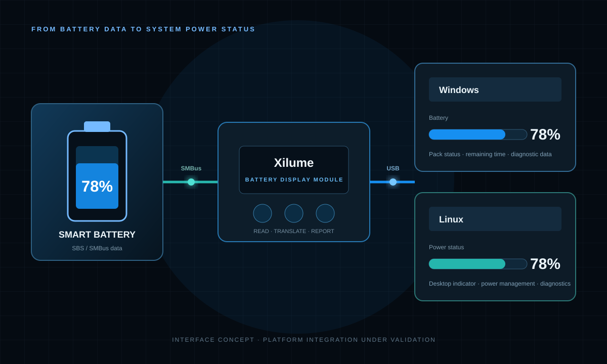
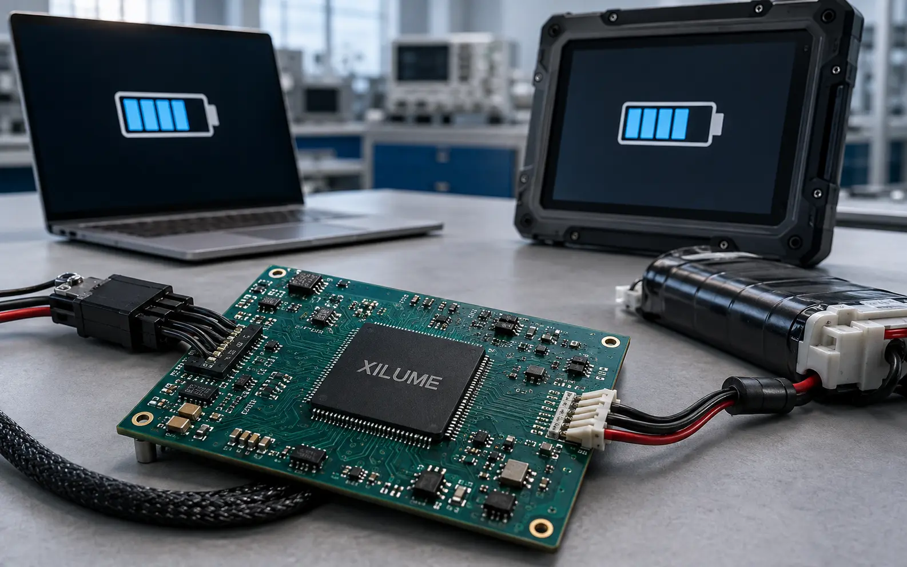

WINDOWS
Native battery status
Charge level, charging state, and remaining-time information through the Windows power interface.
Supported
SMART-BATTERY INTERFACE
Read supported SBS smart-battery data over SMBus and present it through USB to Windows and Linux hosts.

SYSTEM VIEW

WINDOWS + LINUX
Charge level, charging state, and remaining-time information through the Windows power interface.
SupportedDesktop indicators, system power services, diagnostics, and embedded Linux access.
SupportedBATTERY INFORMATION
Battery charging, protection, and power-path functions are separate from the battery display function.

APPLICATIONS
BATTERY DISPLAY MODULE